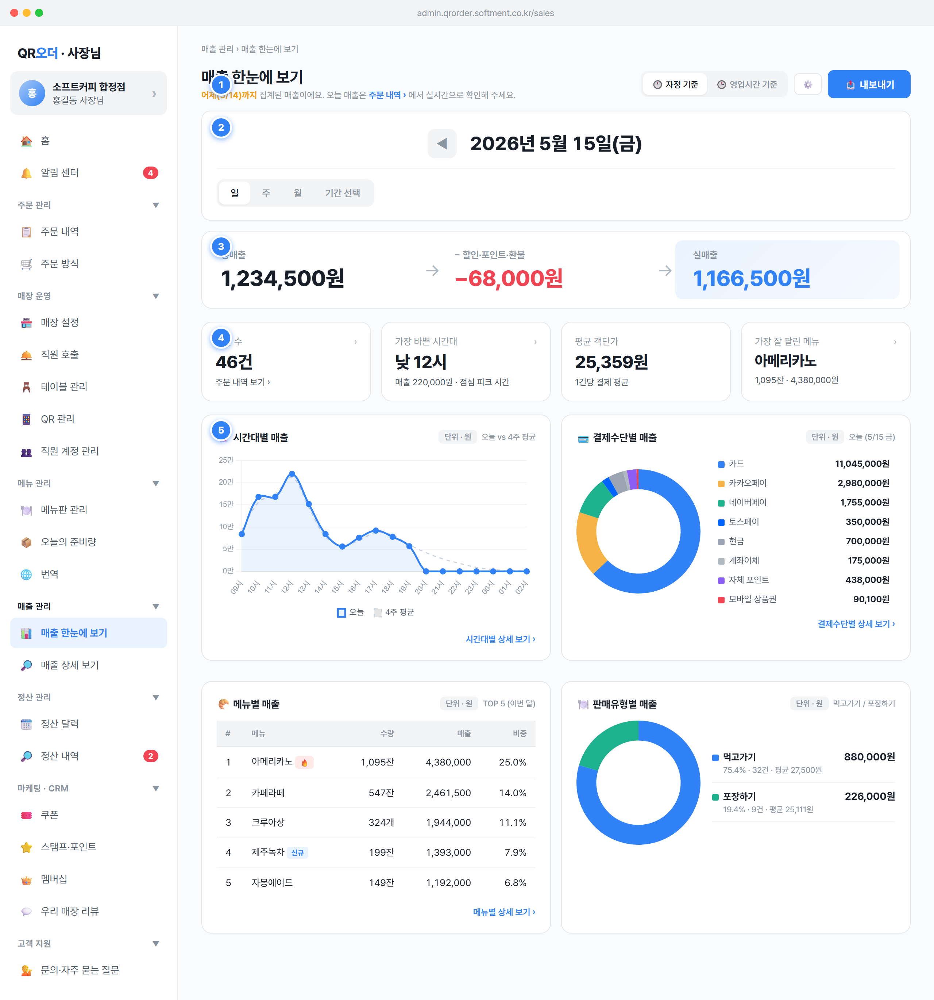

basisToggleInline() 토글로 매출 집계의 시간 기준(자정 기준 / 영업시간 기준)을 전환하고, ⚙️ 버튼으로 영업시간 자체를 설정하는 진입점을 제공한다.state.useBusinessHours=false) ↔ 「🕒 영업시간 기준」(state.useBusinessHours=true). 클릭 시 즉시 renderApp() 재렌더. ON이면 라벨에 현재 영업시간 (09:00~22:00)이 함께 표시된다.bhActiveNotice() 안내 박스가 노출된다. 영업이 자정을 넘기는 매장(bhCrossesMidnight()=true)이면 강한 안내(💡 큰 박스), 아니면 한 줄 안내(🕒)로 분기한다.openBusinessHoursModal() — 영업 시작·마감 시각 입력 모달을 연다. 저장 시 다음 재집계부터 비율(bhRatio())이 반영된다.openExport(행수, '매출 한눈에 보기', 기간라벨) 모달. 형식은 엑셀(.xlsx, 기본) / CSV 선택, 「⬇ 다운로드」 시 토스트 노출.state.useBusinessHours(boolean), state.businessHoursOpen/businessHoursClose(HH:mm). bhRatio()=영업시간 분(min)/1440 으로 0~1 사이 비율을 계산(자정 넘김 매장 보정 포함).applyBhFields()·enrichDay()가 모든 금액·건수에 bhRatio()를 곱해 안분(시뮬레이션). 실서비스에서는 시간대 raw를 영업시간으로 필터링한 합계로 대체.setSection('orders')), 「영업시간 설정 모달」, 「내보내기 모달」.days.length(조회 영업일 수), 기간 라벨은 centerLabel을 전달.owner 전용(SPEC §1.6.2). staff 계정은 좌측 메뉴에 회색+자물쇠로 노출되며 진입 시 403 모달 "사장님 권한이 필요해요. 가맹점주 본인 계정으로 로그인해 주세요"(spec/08-common §4.1).basisCombo()). 매출을 일 / 주 / 월 / 기간 선택 단위로 전환하고, 중앙에 현재 조회 기간을 큰 글씨로 표시한다.day, 기본값) / 「주」(week) / 「월」(month) / 「기간 선택」(custom). 클릭 시 setOverviewPeriod(key) 호출.day=오늘 1일(예 5/15), week=최근 7일(5/9~5/15), month=이번 달 1일~오늘(5/1~5/15)로 periodDays()가 영업일 집합을 산출.openDateRangePicker('overview') 캘린더 모달 — 빠른 선택 칩(오늘/어제/지난 7·14·30일/이번 달·지난 달/이번 분기·지난 분기)과 시작·종료 날짜 입력 제공. 확정 시 state.overviewPeriod='custom'.disableNext:true로 항상 비활성 — 미래 기간은 집계가 없으므로 자리(placeholder)만 차지하고 보이지 않게 처리(visibility:hidden).renderOverview 전체가 재집계되어 KPI 흐름·보조지표·차트가 모두 갱신된다.state.overviewPeriod: 'day' | 'week' | 'month' | 'custom'. custom일 때 state.customStart/customEnd(YYYY-MM-DD)를 사용.rangeStart~rangeEnd(예 5/15(금) 03:00 ~ 5/16(토) 02:59) 표시.detail)·주문 내역(orders)과 동일한 openDateRangePicker 컴포넌트를 공유(state.customTarget로 구분). 단 주문 내역은 최대 90일·보관 1년 제약, 매출 화면은 분기 빠른선택 추가.max는 항상 오늘(TODAY_DATE)로 미래 선택 차단.max=오늘로 미래일 입력 불가.min 제약으로 보정하고, 보정 불가 시 적용 버튼 비활성(spec/08-common §5.2 검증).kpi-flow). 총매출 → −(할인·포인트·환불) → 실매출의 3단계를 좌→우 화살표로 시각화해, 비개발자 사장님이 '들어온 돈에서 무엇이 빠져 실매출이 되는지'를 한눈에 이해하게 한다.gross ② 차감 −(disc+pt+ref)(음수, 빨강 계열) ③ 실매출 actual. 사이에 「→」 화살표.−12,300원). 차감 0원이어도 −0원이 아닌 정상 0 처리.gross=sum(payment.amount), disc=sum(discount.amount), pt=sum(point.amount), ref=sum(refund.amount, 원거래일 기준), actual=gross−disc−pt−ref.vat=round(taxable/11)(일반과세), taxable=actual, net=actual−vat(순매출=공급가액). 이 화면 흐름 카드는 actual까지만 보여주고 vat·net은 매출 상세에서 노출.Payment.status로 구분: paid이면 결제 취소(환불 ref 발생, 원거래일 매출 차감), 미결제면 주문 취소(매출에 애초에 미포함). 후불도 결제 완료 후 환불하면 결제 취소.refunds.original_paid_at의 영업일 매출에서 차감 — SPEC §1.5. 부분 환불도 1건의 환불 이벤트로 rcnt +1, 결제건수 ocnt는 유지.,, round half up(SPEC §1.3).business_type=simplified)은 vat=0으로 표시(UI 숨김 아님) — SPEC §1.4. 흐름 카드 실매출 값 자체는 동일.kpi-row). 매출 외 핵심 운영 지표 — 주문 수 / 가장 바쁜 시간대 / 평균 객단가 / 가장 잘 팔린 메뉴를 요약하고, 각 카드에서 해당 상세 화면으로 바로 이동시킨다.fmt(ordCnt)건 표시, 하단 "주문 내역 보기 ›". 클릭 시 setSection('orders').HOUR에서 매출 최대 시각을 산출, '오전/낮/오후 N시' 라벨. 점심(11~13시)·저녁(17~20시) 구간이면 부제가 "점심 피크 시간"/"저녁 피크 시간", 그 외 "오늘 가장 바쁜 시간". 클릭 시 setDetailTab('hour').avgPrice=round(actual/ordCnt), 부제 "1건당 결제 평균".MENU[0]의 이름·수량·매출 표시(베이커리는 '개', 그 외 '잔'). 클릭 시 setDetailTab('menu').ordCnt=count(payment WHERE status='paid')(SPEC §2.1 ocnt), 영업시간 기준 ON 시 bhRatio() 안분.avgPrice=실매출÷주문수(SPEC §2.1 avg). ordCnt=0이면 0 처리(0 나눗셈 방지, 코드상 ordCnt ? round(actual/ordCnt) : 0).HOUR[].amt 최대값, 메뉴는 MENU[0](수량·매출 기준 1위) 사용.grid-2-eq, 4개 패널). 시간대별·결제수단별·메뉴별·판매유형별 매출 분포를 시각화해 매출의 '구성'을 보여 준다.drawHourChart('ch-hour') 막대/선 차트, '오늘 vs 4주 평균' 비교. "시간대별 상세 보기 ›" → setDetailTab('hour').ch-donut-pay 도넛 + 범례(스와치·금액). 금액>0인 결제수단만 노출(filter(m=>m.amt>0)). "결제수단별 상세 보기 ›" → setDetailTab('method').#/메뉴/수량/매출/비중(%). 행 클릭 시 setDetailTab('menu'). 🔥(hot)·신규 배지 표시. 비중=amt/합계*100 소수 1자리.ch-donut-ch 도넛 + visCHANNEL() 채널별 금액·비중·건수·평균. 부제는 포장 예약 채널 활성 여부(ORDER_CHANNELS.reservation)에 따라 '먹고가기 / 포장하기 / 포장 예약' 또는 '먹고가기 / 포장하기'.destroy) 후 재생성된다.GROUP BY 시간(실시간), 과거는 사전 집계 테이블 — SPEC §2.2. 영업시간 기준 ON 시 inBusinessHours(h) 구간만 반영.applyBhFields()로 영업시간 비율 안분. 메뉴별은 MENU[].qty/amt/refund/refundCnt 사용.unit-tag로 명시). 메뉴 수량 단위는 카테고리에 따라 '개'(베이커리)/'잔'.hour/method/menu/channel). 판매유형 정의는 spec/04-order-type(채널)과 정합.sumA||1)으로 NaN 방지.